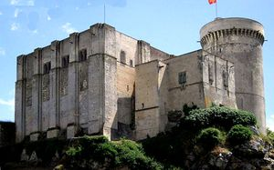
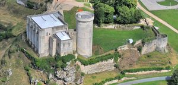
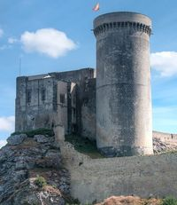
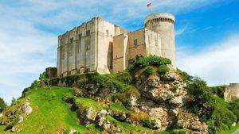
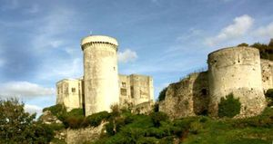
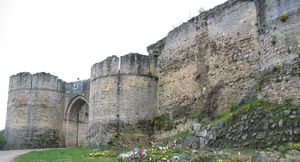
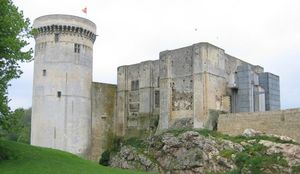
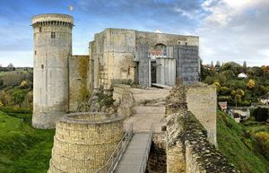

Recensement Jean-Claude Truffet
| Département | 14 — Calvados |
| Canton | Falaise |
| Commune | Falaise |
| Type d'édifice | Forteresse |
| Période d'origine | XII-XV |
| Coordonnées GPS | 48° 53' 36" Nord, 0° 12' 14" Ouest |








FALAISE, il ne subsiste aujourdhui que de faibles traces du donjon de Guillaume et cest à Henry Ier "Beauclerc", son dernier fils, que nous devons la construction du plus ancien des bâtiments en 1123. Ce bâtiment constitue aujourdhui la place forte de la haute cour. Devenu roi dAngleterre, il sinspire directement des forteresses anglaises pour rénover le château familial de Falaise: il en reproduit le plan carré, avec la partition par étage, laménagement despaces intérieurs voués à la résidence du seigneur et laccès bien défendu par un escalier menant à létage et protégé par un avant corps, le grand donjon de Falaise est une forteresse anglo-normande. A la mort d'Henry Ier, de nouveaux conflits secouent le royaume pendant vingt ans. Mathilde, sa fille et Etienne de Blois, son neveu disparaissent à leur tour, et cest Henry II Plantagenêt, le fils de Mathilde qui hérite du titre de duc et de roi. Son mariage avec Aliénor dAquitaine le place à la tête dun vaste domaine. Nous sommes en 1154, jamais le royaume anglo-normand, quon appelle aussi lempire Plantagenêt, na été aussi fort. Ce territoire va susciter la convoitise du Roi de France, dont le propre domaine est bien moindre. A cette même période, le château de Falaise sagrandit du petit donjon. Il protège le front ouest de la forteresse et il est aménagé en résidence. A la fin du XIIe siècle, le Roi de France Philippe Auguste soppose aux ducs normands, Henry II tout dabord, puis ses fils, Richard Cur de Lion et Jean sans Terre, cest contre ce dernier quil obtiendra une victoire décisive, la Normandie devient française. En 1204, lannexion du duché Normand au royaume de France met donc fin à la saga des ducs. Le nouveau maître de Normandie a besoin dappuis locaux, il se montre très conciliant avec les falaisiens et reconstruit nombre de bâtiments détruits pendant le siège.
FALAISE, dans lenceinte, Philippe Auguste aménage un châtelet qui remplace lancienne tour qui mène aux donjons. Il flanque les remparts de tours et fait construire un logis vicomtal le long du rempart nord. loccupation anglaise qui débute en 1418 relance un important programme de restaurations et daménagements militaires dans lenceinte, ainsi que la construction de salles attribuées aux nouveaux administrateurs de la ville et de la vicomté. 15 tours de flanquement protègent les remparts du château-fort. On aménage des ouvertures adaptées aux nouvelles techniques de combat, des canonnières. Le XVIe siècle est durement marqué par les guerres de Religion, le couronnement de Henri IV, Roi de France, protestant, va provoquer des conflits en Normandie, la ville de Falaise, hostile au nouveau Roi, subit un siège sévère, en janvier 1590, les armées royales détruisent le rempart ouest de lenceinte castrale. Quelques jours après, le gouverneur de Falaise se rend; en même temps que le rôle militaire du château disparaît. Le déclin amorcé se confirme, les bâtiments se dégradent. Les XVIIe et XVIIIe siècles, sont ceux dun développement général de léconomie de la ville. Les portes de lenceinte urbaine, symboles des défenses médiévales, sont rasées, on aménage de nouveaux espaces urbains. Au XVIIIe siècle, on procède à dimportants travaux. Les fossés sont comblés. Les toitures des donjons seffondrent, il est envisagé de les faire raser, mais le coût des travaux est si élevé quon y renonce, en 1790, on élève des arcades dans le vestibule du logis, la chapelle castrale est partiellement détruite et les donjons sont abandonnés. Le troisième des donjons du château, voit le jour, cest une tour de défense cylindrique, plus adaptée au siège, et qui, haute de trente mètres, symbolise son pouvoir. Ce ne sera quen 1840, par la volonté du premier ministre des "Beaux Arts", Prosper Mérimée, on classe le château.
Roi de France
"
Forteresse de Falaise GPS : 48° 53' 36" Nord, 0° 12' 14" Ouest